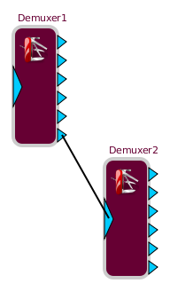

Synapse Demultiplexor (SynDemux)
# of inputs: 1
# of outputs: 1
Resizable: No
Behaviour:
syndemux is sort of the opposite of
synmux building block. What it does is splitting its input stream given a split string, and forward the splitted parts to its outpurs. Note that syndemux is a 6-inputs building block, and if the input string

Building Block Options:
Name
type: String
Default Value: Timer#
Simply defines the blocks name. Also please note that a block name is not an UID ( meaning that you can have multiple blocks having the same name )
Color
type: HexString
Default Value: None
defines the building blocks color in the scheme
data
type: String
Default Value: 0
Defines the merging template. In other words, it tells how your input streams should be merged. each synmux input is defined in the data string by "[[SI#]]" , # being a number between 0 and 5. Now let's say that you defined a synmux data string with "Hello [[SI0]]! What a [[SI1]] day !". Then if you send "World" on input 0 , and "sunny" on input 1 , synmuxer will return "Hello World ! What a sunny day !". it is as simple as that !
Timeout
type: Integer
Default Value: 0
Defines the amount of time (in milleseconds) to wait until forcing to send the output stream to the synmux peers (in case one of the defined inputs in the data template string didn't send any data ) . When timeout is 0 , synmux will wait endlessly to receive data on its 6 inputs. (it can be considered to be in blocking mode, opposed to half-blocking mode when timeout > 0)